2 Working With a Coding Assistant
Quarto, reproducible publishing, coding assistants, Markdown, Python, EPUB, data analysis, k-means clustering
Simon Willison, a developer, has asked most major new models the same question since 2024: “Generate an SVG of a pelican riding a bicycle”. Four Claude models, each at three effort levels, answered it with 12 drawings, and every one is recognisably a pelican on a bicycle. The dearest cost 13.09 cents, about 93 times as much as the cheapest that was good enough, at 0.14 cents (Figure 2.2).
Choosing between those drawings is the first of many judgements this chapter teaches. A coding assistant is a program that writes and edits files and runs commands at your request: you write the Prompt, it does the typing, and you Check whether the result is right. It can produce in a minute what would take an hour by hand, and it can produce plausible, confident, wrong work just as quickly. How do you get the first kind of work without being fooled by the second?
2.1 Model plus harness
A coding assistant is two programs working together (Figure 2.1).
The model is a large language model, such as Anthropic’s Claude, OpenAI’s GPT or Google’s Gemini. It runs on the vendor’s servers. It reads text and writes text, and it can reply with a structured request to use a tool: “read this file”, “run this command”.
The harness is the program on your computer that surrounds the model. Claude Code, Codex and Antigravity are harnesses. The harness gives the model its tools (reading and writing files, running commands, searching), carries out the model’s tool requests, asks you before it does anything consequential, and sends the results back to the model. That loop repeats until the model replies with an answer instead of another request.
![You give the harness a prompt, and it shows you results and asks you to approve commands. The harness (Claude Code, Codex or Antigravity) sends the conversation and tool results to the model (Claude, GPT or Gemini), which runs on the vendor's servers and replies with text or a request to use a tool. The harness carries out tool requests in the project folder, its root: it reads AGENTS.md first, then reads and edits files and runs commands there. The model decides, the harness does, and you direct and check.](../media/diagrams/agent-loop.svg)
A short way to remember the split: the model decides, the harness does, you direct and check. It has a practical consequence. Many harnesses can run several models, so the same harness behaves differently with a different model, and the same model behaves differently inside a different harness. When an assistant disappoints you, the cause can be either half, and the fix is different: a stronger model for reasoning that falls short, better rules or permissions for a harness that does the wrong thing.
The model cannot touch your computer. Everything it “does” is a request that the harness carries out, and the harness can show you each request before acting on it. That is the basis of every safety habit in this chapter: you approve commands you have read, and you review files after they change.
2.2 Choosing an assistant and a model
Three assistants are used and tested in this book. Each comes from the same company as its default models:
| Assistant | You type | Made by | Default models |
|---|---|---|---|
| Claude Code | claude |
Anthropic | Claude |
| Codex | codex |
OpenAI | GPT |
| Antigravity | agy |
Gemini |
Other assistants exist; this book does not test them, so it does not list them. Every prompt in the book is written to work in any of the three. A vendor’s own pairing of harness and model is the easiest to set up, but it is not automatically the best fit for a task: the assistant and the model are separate choices.
2.2.1 Pick a model by task, not by rank
Each vendor offers a family of models, from small and cheap to large and capable. They are not simply better and worse versions of one thing. Larger, more recent models usually follow longer instructions, plan multi-step work and recover from their own errors better. Small models are faster and cheaper, and often good enough for short, well-specified edits such as fixing a typo or reformatting a table. Joining two datasets or debugging a failed render rewards the stronger model.
The prompts in this book are short and specific, so a mid-sized model at a moderate effort setting (how long the model reasons before answering) is enough: Claude’s Sonnet on medium effort, or Haiku for small edits, or OpenAI’s Sol on low. For unfamiliar, hard work, the vendors’ own advice starts higher: Anthropic suggests starting with Opus 5.5 for most workloads, and OpenAI with GPT-6 Astra for complex reasoning and coding. Start small, and move up only when a task keeps failing.
Prices change monthly; the principle does not. The list prices below were correct on 2026-11-12 and will not be for long. Read them as a snapshot of the spread, not as numbers to plan with.
| Model | What the vendor says it is for | Input / output, $ per million tokens |
|---|---|---|
| Claude Haiku 5.5 | “high-volume, latency-sensitive tasks such as classification, extraction, and routing” | 0.10 / 0.50 |
| Claude Sonnet 5.5 | “the best combination of speed and intelligence” | 2 / 10 |
| Claude Opus 5.5 | “long-running agentic coding and knowledge work” | 4 / 20 |
| Claude Fable 5.2 | “demanding reasoning and long-horizon agentic work” | 8 / 40 |
| GPT-6 Luna | “focused, high-volume tasks” | 0.10 / 0.50 |
| GPT-6.1 Terra | “visual reasoning, precise computer use, and clear, natural writing” | 1 / 5 |
| GPT-6.1 Sol | “near-Astra performance for complex work at a lower cost” | 2 / 10 |
| GPT-6 Astra | “the most demanding work” | 10 / 50 |
Haiku’s price is for prompts up to 100,000 tokens; longer ones cost five times as much. The pelican runs below used Fable 5.2’s predecessor, Fable 5.1, listed at 10 / 50. Subscriptions count usage differently from API prices, and which models you can choose depends on your plan and the assistant’s version. Sources: Anthropic’s models overview and pricing pages and OpenAI’s models pages (checked 2026-11-12).
The cost of a fixed level of capability has been falling fast. Measuring the cheapest model that reaches a given benchmark score, the venture firm a16z found the price falling about tenfold a year, a thousandfold over the three years from November 2021, and Epoch AI found falls of between 9 and 900 times a year depending on the benchmark (both checked 2026-11-07). Both warn that the pace may slow, and neither measures the frontier, where the price of the most capable work may fall more slowly. The practical lesson is the same either way: choose by what the task needs, not by today’s price.
2.2.2 One prompt, four models, three efforts
The pelicans this chapter opened with make the trade-off concrete. Figure 2.2 shows one run of each of four Claude models at three effort levels, with each reply’s cost at API list prices.
| Model | low effort | medium effort | high effort |
|---|---|---|---|
| Haiku 5.5 | 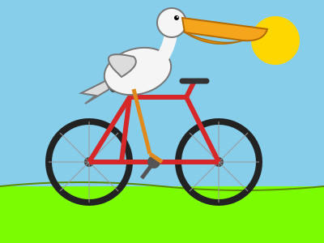 0.09¢ |
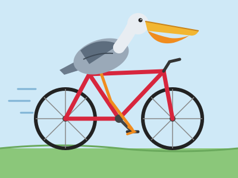 0.14¢, enough |
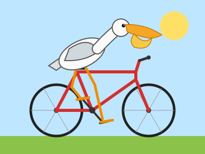 0.25¢ |
| Sonnet 5.5 | 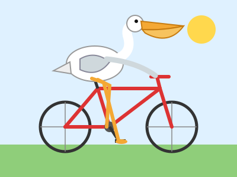 1.63¢ |
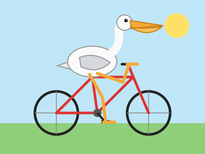 1.80¢, enough |
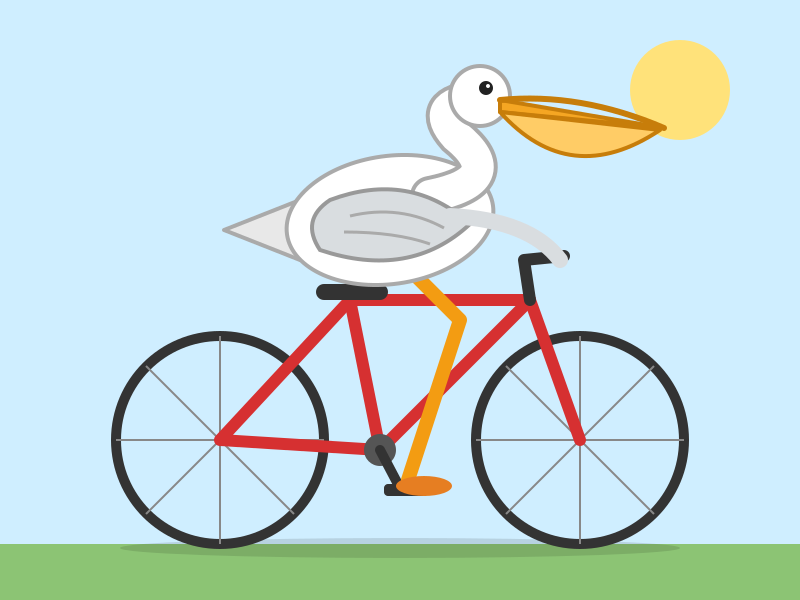 2.34¢ |
| Opus 5.5 | 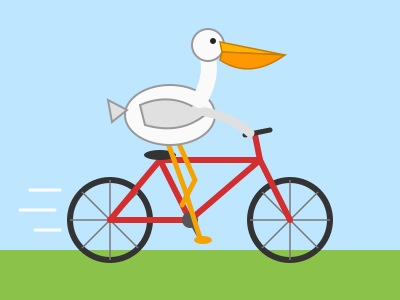 3.79¢ |
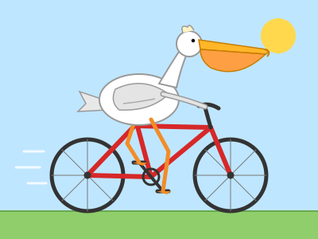 5.89¢ |
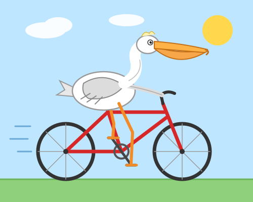 6.74¢ |
| Fable 5.1 | 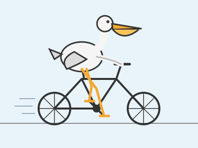 10.02¢ |
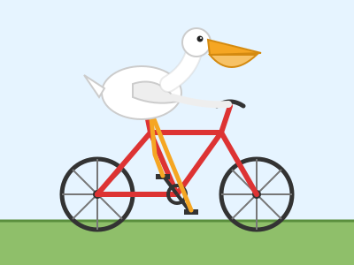 9.91¢ |
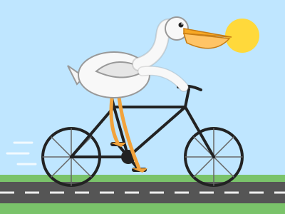 13.09¢ |
Read the grid in two directions. Down the rows, the model grows and the price per token rises, so costs climb from fractions of a cent to more than ten cents. Across the columns, effort rises: the model reasons longer and writes more, so the cost usually rises while the picture gains details rather than becoming correct. Haiku on low effort has the weakest frame; from medium effort up, the frames are sound, which is consistent with, though no proof of, the book’s advice of medium effort.
Keep the evidence in proportion. It is one run per cell of one small, self-contained task, not a benchmark: run it again and you get different birds, and Fable on medium effort even cost less than Fable on low. More effort is not always better, either: at their maximum effort, Sonnet 5.5 and Opus 5.5 each spent 128,000 tokens reasoning, the models’ output limit, and returned no drawing (Simon Willison’s transcripts, checked 2026-11-12). A drawing says little about a long job that joins datasets and recovers from errors, which is where stronger models earn their price. Whether a 93-fold difference in price is worth paying depends entirely on the task.
2.3 What a conversation costs
Models are paid for by the token, a fragment of text of a few characters. Three things raise the cost of a session:
- A bigger model costs more per token.
- A higher effort setting makes the model write more reasoning tokens per reply.
- A longer conversation costs more with every turn, because the model keeps no memory between requests: the harness sends the whole conversation again each time. Prompt caching makes the repeated part cheaper, not free, and caches expire.
The habits that follow are simple: a mid-sized model at moderate effort, one task per conversation, and a fresh conversation as soon as a task is done. Three commands, typed at the assistant’s prompt rather than in the shell, cover them:
/ alone to list your assistant’s commands.
| Command | Claude Code | Codex | Use it when |
|---|---|---|---|
/model |
switches the model; arrows adjust the effort level where the model supports it | chooses the model and reasoning effort | a prompt keeps failing (go up) or the work is routine (go down) |
/clear |
starts a new conversation with empty context; the old one can be resumed | clears the terminal and starts a fresh chat | a task is finished and an unrelated one starts |
/exit |
exits; /quit is the same |
exits; /quit is the same |
you are done, or need to move to another folder |
/clear matters for quality as well as cost. Old instructions and files read earlier keep steering the model while they remain in the conversation; a fresh conversation drops them. Nothing on disk changes, and the project’s rules file is read again.
Pause and think. One task is finished and an unrelated one starts. Which command first?
/clear. The new task needs none of the old conversation, and carrying it along costs tokens on every turn and can mislead the model.
2.4 The root folder is the assistant’s world
An assistant treats the folder you start it in as its root: it reads and edits files there and in the folders below, and runs commands from there. The first time you start one in a new folder, it asks whether you trust it. Claude Code’s prompt, captured on 2026-11-07, warns that “Claude Code’ll be able to read, edit, and execute files here”; Codex asks the same question in a folder that is a Git repository, and says it can read, edit and run files “subject to your permission settings”.
That question deserves a real answer. Trust only a folder you created for the work. Never start an assistant in your home folder, in Documents, or anywhere that holds other people’s projects, private documents or keys (such as ~/.ssh). Project instructions in a trusted folder are read and followed too, which is another reason to trust only your own folders.
Starting in a small project folder has three practical benefits. Paths in prompts stay short (data/attractions.csv), the project’s rules file is found, and a mistake stays inside one folder that you can restore. It is not a guaranteed boundary, though: a command can still name a path outside the folder, so read each command before you approve it.
Two assistants writing the same files, or rendering in one folder at once, will collide; Section 6.2 shows the safe split. To work on another project, leave with /exit, change folder, and start the assistant again there.
2.5 Rules that persist: AGENTS.md
Everything you tell an assistant in conversation is forgotten when the conversation ends. Rules that must hold in every session go in a file: AGENTS.md, a plain Markdown file at the top of the project folder that the assistant reads at the start of each session. A good one has three parts:
- Scope: what the project is, and what it is not.
- Rules: what must always hold (“every number comes from a cited file in
data/”). - Commands: how to build and check the project.
All three assistants in this book read it (checked 2026-10-30). Codex reads AGENTS.md files before doing any work. Antigravity reads AGENTS.md or GEMINI.md in the project’s folders. Claude Code reads AGENTS.md when there is no CLAUDE.md in the working folder or above it, from version 2.1.277; a CLAUDE.md containing the line @AGENTS.md imports it, so one file can serve all three (Claude Code memory documentation, checked 2026-11-12). The repository behind this book works exactly that way: its CLAUDE.md imports its AGENTS.md.
AGENTS.md is context, not enforcement. The assistant reads the rules and usually follows them, but it can still slip. Write rules that are concrete enough to check (“call ALVA counts ‘ALVA member attractions’”), and check them.
Part II writes the London guide’s rules in Chapter 4, and Part III writes the water analysis’s in Chapter 8.
2.6 How to ask for work
A prompt is the request you type into the assistant. Four habits make prompts reliable:
Be specific. Name the files, the columns, the chart type and the output. “Make a chart” invites guessing; “add a horizontal bar chart of visits_2025 by attraction from data/attractions.csv” does not.
One step at a time. One task per prompt keeps each change small enough to review, and tells you which step broke when one does.
Ask it to run and check. End with a check the assistant can perform: “render it and tell me which file it wrote”, “check that the PDF is one page”. An assistant that verifies its own work catches many of its own mistakes.
Check what changed. You are responsible for the result. Read the changed files (most assistants can show you a diff, the lines added and removed) before moving on.
The prompts in this book were designed with AI assistance and refined to reduce errors, but they are not magic, and assistants vary. When a prompt mentions something you do not understand (a YAML key, a Markdown construct, a Python call), ask before you paste:
Explain what a Markdown table is and when to use it. Then name the official docs page where I can verify your answer.Asking for the documentation page matters: it turns the answer into something you can check.
2.6.1 A web chat can draft your prompt
If you know what you want but not how to ask for it, a free web chat (Claude, ChatGPT or Gemini in the browser) can turn a rough idea into a prompt. Describe the goal in plain words, name your tools, and ask for a prompt of one to four lines, with one task, concrete file names and a check (Figure 2.3). The chat cannot see your files, so it guesses; the assistant can see them, so it checks. Read the drafted prompt before you paste it, and fix any file name that does not match your folder.
![An animated example in five steps. A free web chat gets a request typed in plain words: a one-page London visitor guide, and a prompt for a coding assistant, naming the tools Quarto and Markdown, of one to four lines with one task, concrete file names and a check. The chat replies with a prompt: use Quarto and Markdown, create london.md with the title Visit London, a level-1 heading and a two-sentence welcome, add a heading Top sights with three bullets each naming a place and why to visit, run quarto render london.md, then list the headings in london.html and any errors. The prompt is copied and pasted into a coding assistant in the terminal, which writes london.md, renders it, lists the headings and reports no errors.](../media/stills/chat-prompt.png)
Paste only what you would be happy to publish. Web chats and assistants send your text to the vendor: no passwords, keys, unpublished data or personal information.
2.7 How to read the assistant boxes
Every hands-on step in this book uses the same three-part box. Here is the first one you will meet in Part II:
Create london.md with a level-1 heading "Visit London" and one welcome paragraph.writes london.md · may run quarto render london.md
approve its commands · open london.html in your browser
Ask your coding assistant holds the exact prompt to paste into the assistant (in the HTML edition, with a copy button). Expect it to run lists what the assistant will probably do, so you recognise it when it asks for approval; you do not type these yourself. You do lists the few things only you can do: start the assistant, sign in to accounts, approve commands, run a live preview, open results. The assistant occupies the terminal tab it runs in, so commands in a You do box go in a second terminal tab opened in the same folder.
Together the boxes are one turn of the loop in the book’s title. Ask your coding assistant is the Prompt. Expect it to run and You do are where you Check, recognising each command before you approve it and opening the result yourself. The render is the Publish. Each exercise closes the loop with You’re done when: the check, stated so that you can see whether it passed.
The prompts are examples, not transcripts. Assistants vary from version to version and run to run, so the files they write will differ in detail from the ones shown. What should not vary is the result you check. Figure 2.4 shows what a session looks like.
![A terminal replay of a coding-assistant session, labelled as an illustration. The prompt asks for london.md with a level-1 heading Visit London and one welcome paragraph. The assistant says it will create the file and shows the lines it writes: the heading and a welcome sentence about free museums, royal history and riverside walks. It says it will render the file to check it, shows the command quarto render london.md, and asks Allow this command, with Yes selected. The output reads Output created: london.html, and the assistant reports that london.md has the heading and one welcome paragraph and that the render had no errors.](../media/stills/agent-session.png)
2.8 Using AI in research: say it, own it
If your work is research, using an assistant raises obligations beyond getting the code right. Journals and funders differ in detail, so read your venue’s own policy, but the International Committee of Medical Journal Editors (ICMJE), whose recommendations many journals follow, states a common core (checked 2026-11-12):
- An AI tool is never an author. Chatbots and other AI-assisted tools “should not be listed as authors because they cannot be responsible for the accuracy, integrity, and originality of the work”.
- You are responsible for what it produced. Humans are responsible for any submitted material that used AI-assisted technologies, and should review and edit AI output, which “can be incorrect, incomplete, or biased”. That includes references: AI-generated material is not an acceptable primary source.
- Disclose the use. Authors describe their use of AI-assisted technologies at submission, in the cover letter and in the appropriate section of the work.
Two further rules follow from ordinary research ethics rather than from any one policy. Keep unpublished manuscripts, participant data and other confidential material out of public AI tools. And never let a tool generate or alter primary data or images: presenting generated data as observed is fabrication.
A useful disclosure names the tool and version, the tasks it performed and the checks you made. The statement for this book, on its copyright page, is written that way. Where it goes depends on the use: code and analysis belong in the Methods, with enough detail to reproduce them, which in a Quarto project means the code itself and the project’s AGENTS.md.
Pause and think. Which needs a statement: fixing a typo, or computing a table?
Computing a table is analysis: describe it in the Methods, in enough detail to reproduce. Venues differ on whether language editing needs a statement; ICMJE’s recommendations make no exception for it, so when in doubt, disclose.
Summary
A coding assistant is a model that decides and a harness that acts, with you directing and checking in between. Choose the model by the task: as the pelicans showed, a cheaper model at medium effort is often enough for a small, well-specified step. Cost grows with model size, effort and conversation length, so keep one task per conversation. Start the assistant only in a folder you created for the work, and put durable rules in AGENTS.md, remembering that rules are context, not enforcement. Good prompts are specific, single-step and end in a check, and every change they cause is yours to review. In research, the assistant is never an author, and its use is disclosed.
All of this assumes a computer on which an assistant, Quarto and Python are installed and working together. Is yours? Chapter 3 gets it there in six checked steps.
Further reading
- Claude Code, commands reference and memory and
AGENTS.md(checked 2026-11-12). - OpenAI, Codex CLI and
AGENTS.md(checked 2026-11-12 and 2026-10-30). - Google, Antigravity rules (checked 2026-10-30).
- Anthropic, models overview and pricing; OpenAI, models (checked 2026-11-12).
- Free plans for web chats: Claude, ChatGPT and Gemini (checked 2026-11-12).
- Gemini CLI, installation, on its replacement by Antigravity CLI (checked 2026-11-12).
- Guido Appenzeller, LLMflation, a16z, 2024; Epoch AI, LLM inference price trends, 2025 (checked 2026-11-07).
- Simon Willison, pelican riding a bicycle series (checked 2026-11-06).
- ICMJE, Use of AI by authors (checked 2026-11-12).